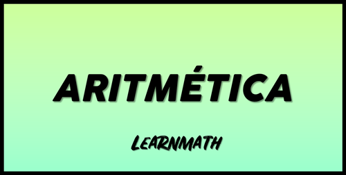
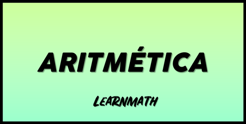
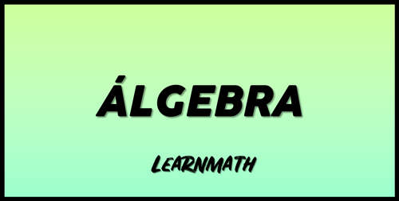
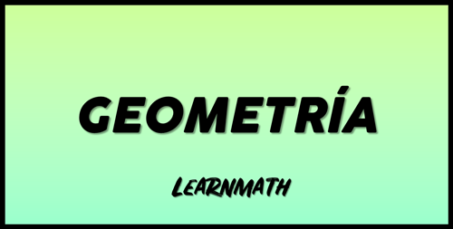

ARITMÉTICA
Rama de las matemáticas que tiene como área de estudio a los números y las operaciones básicas que se realizan con estos.
Rama de las matemáticas que tiene como área de estudio a los números y las operaciones básicas que se realizan con estos.
Rama de las matemáticas que estudia las operaciones aritméticas valiéndose de números y símbolos.
Rama de las matemáticas que se encarga del estudio de las propiedades de las figuras en el plano o el espacio.
